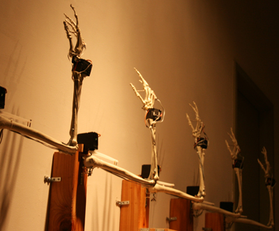

Video (Plastic Hands, 2011)
Video (Wooden Hands, 2012)
Please smile is an exhibit involving five robotic skeleton arms that change their gestures depending on a viewer’s facial expressions. It consists of a microcontroller, a camera, a computer, five external power supplies, and five plastic skeleton arms, each with four motors. It incorporated elements from mechanical engineering, computer vision perception to serve artistic expression with a robot.
Audiences interact with “Please smile” in three different ways. When no human falls within the view of the camera, the five robotic skeleton arms choose the default position, which is bending their elbows and wrists near the wall. When a human steps within the view of the camera, the arms point at the human and follow his/her movements. Then when someone smiles in front of it, the five arms wave their hands. Through artwork such as “Please smile,” I would like to foster positive audience behaviors.
Credit
Developer: Hye Yeon Nam
Robotics: Changhyun Choi